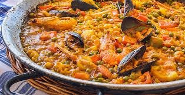

La paella es un plato a base de arroz, cocinado en una sartén ancha
(denominada paellera) a la par de otros ingredientes (como carnes, mariscos,
legumbres y verduras) que varían según la región. Su origen se remonta a la
Comunidad Valenciana, en el sur del país, con salida al mar Balear. Ha adquirido
popularidad en toda España y es un ícono de su gastronomía.
A continuación, la receta para preparar una exquisita paella.

Lista de ingredientes
Un morrón rojo y otro verde
Dos cebollas
200 gramos de arroz
500 gramos de mariscos
Caldo de verduras
Ajo
Condimentos y aceite (cantidad necesaria)
Cómo preparar paella: el paso a paso
Sofreir en aceite de oliva los mariscos previamente lavados. Agregar
los morrones, la cebolla y el ajo picados en cuadraditos. Salpimentar y
cocinar por 8 minutos a fuego bajo.
Añadir el arroz junto al caldo y los condimentos de forma uniforme.
Cocinar sin revolver por media hora. Luego, deje reposar con el fuego
apagado por unos minutos.
¡Listo! A disfrutar.
A continuación, el vídeo con el procedimiento detallado